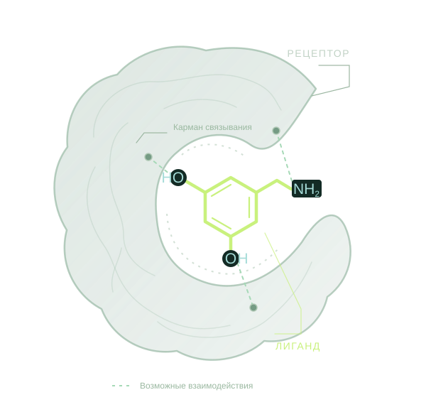
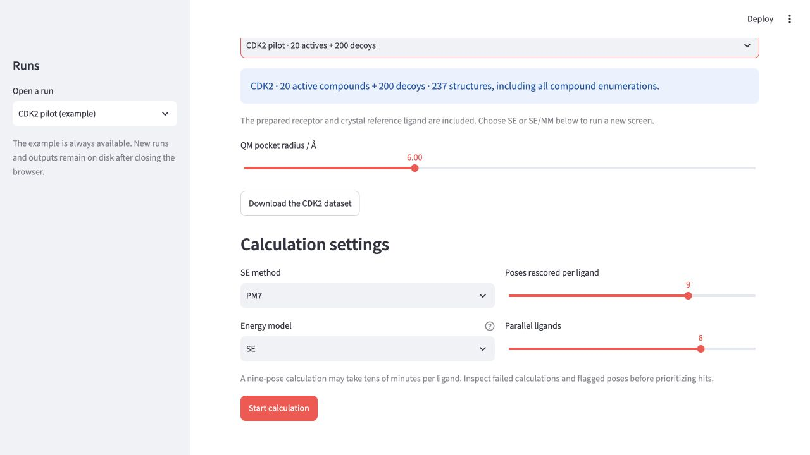
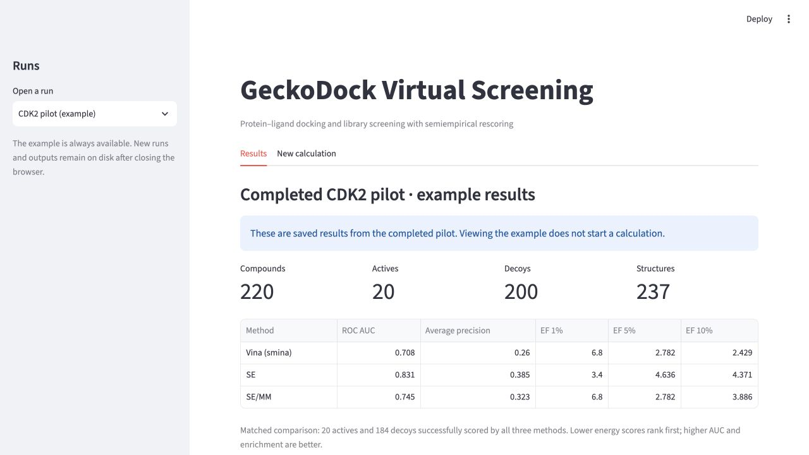
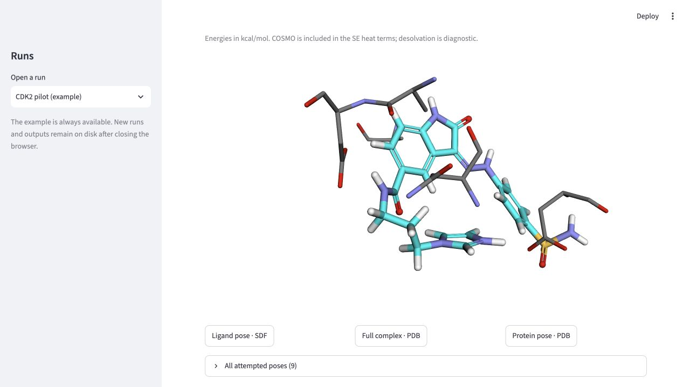

БЕЛКОВАЯ МИШЕНЬ
HS90A
Белок теплового шока HSP90α
Активные соединения среди первых 11
011 соединений
SE находит 9 активных соединений среди первых 11; Vina — 0. SE/MM в этом пилоте находит 2.
ВИРТУАЛЬНЫЙ СКРИНИНГ · КВАНТОВАЯ ХИМИЯ
GeckoDock объединяет молекулярный докинг и полуэмпирическую квантовую химию, чтобы помочь исследователям отбирать качественные лиганды.
Работающий прототип

Мы разрабатываем программную платформу для задачи виртуального скрининга библиотек лигандов.
GeckoDock проводит виртуальный скрининг набора лигандов с использованием полуэмпирических расчётов энергии связывания и формирует список кандидатов для экспериментальной проверки.
Прототип уже поддерживает пакетные расчёты, веб-интерфейс, просмотр молекулярных структур и экспорт результатов.
ДЛЯ КОГО СОЗДАЁМ
Структура белковой мишени и библиотека молекул. Подготовка геометрии и выбор области связывания.
Белок + библиотека лигандовГенерация поз лиганда в кармане белка выполняется с помощью smina и оценочной функции Vina.
Кандидатные позыПолуэмпирический расчёт в MOPAC, ранжирование кандидатов и отчёт с энергетическими компонентами.
Приоритетный списокДВА ПОДХОДА К ОЦЕНКЕ
Полуэмпирический расчёт молекулы и ближайшего окружения в кармане белка. Доступны методы PM7 и PM6-ORG.
SE-оценка дополняется электростатической поправкой от части белка за пределами квантовой области.

Загрузка собственных структур или выбор готового набора данных, область связывания, метод PM7 / PM6-ORG, модель SE / SE/MM и параметры расчёта.

Для сравнения методов (Vina, SE и SE/MM) используются метрики ROC-AUC и EF. Результаты доступны для просмотра и скачивания.

Анализ энергетических компонентов, просмотр и экспорт структур в SDF / PDB.
Четыре белковые мишени. По 20 известных активных соединений и 200 decoys на каждый белок.
СРАВНЕНИЕ МЕТОДОВ
Чем больше известных активных соединений среди первых кандидатов, тем полезнее такой список для следующего этапа исследования.
БЕЛКОВАЯ МИШЕНЬ
Белок теплового шока HSP90α
Активные соединения среди первых 11
SE находит 9 активных соединений среди первых 11; Vina — 0. SE/MM в этом пилоте находит 2.
БЕЛКОВАЯ МИШЕНЬ
Фосфолипаза A2
Активные соединения среди первых 11
SE находит 5 активных соединений среди первых 11; Vina и SE/MM — по 2.
БЕЛКОВАЯ МИШЕНЬ
Фактор свёртывания крови VII
Активные соединения среди первых 11
SE и SE/MM находят по 10 активных соединений среди первых 11; Vina — 7. При этом ROC-AUC у трёх методов близок.
БЕЛКОВАЯ МИШЕНЬ
Циклинзависимая киназа 2
Активные соединения среди первых 11
SE находит 5 активных соединений среди первых 11; Vina и SE/MM — по 3.
Первые 11 — это 5% от 220 соединений.
Открыты к обсуждению исследовательских задач, тестированию технологии и обратной связи от специалистов.
КОНТАКТ ПРОЕКТА
maksim040801@gmail.comНапишите о вашей мишени, библиотеке молекул или идее сотрудничества.
Написать письмоПОДДЕРЖКА ПРОЕКТА
Проект GeckoDock реализуется при поддержке Фонда содействия инновациям в рамках программы «Студенческий стартап» мероприятия «Платформа университетского технологического предпринимательства» федерального проекта «Технологии».
О программе на сайте Фонда